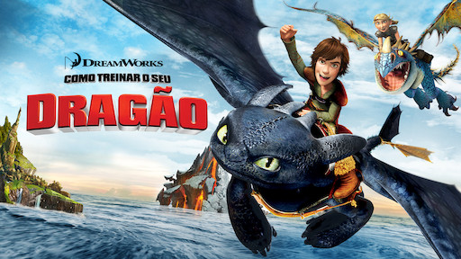

Como Treinar Seu Dragão
Soluço é um adolescente viking da ilha de Berk, onde lutar contra dragões é um meio de vida. Suas
opiniões avançadas e um senso de humor estranho o tornam um desajustado, apesar de seu pai ser o
chefe do clã. Jogado em uma escola de combate a dragões, ele quer provar que é um verdadeiro
viking, mas ao fazer amizade com um dragão machucado, ele tem a chance de mudar o futuro de seu
povo.
Como Treinar Seu Dragão 2
Cinco anos se passaram desde que Soluço estabeleceu a paz com os dragões e vive em harmonia, na
Ilha de Berk, com Banguela. Eles voam, apostam corridas e se divertem muito. Em uma destas
aventuras, descobrem uma caverna secreta cheia de dragões. Agora, a dupla luta para proteger
Berk de um guerreiro perigoso, chamado Drago Bludvist, que deseja controlar todos os dragões
existentes.
Como Treinar Seu Dragão 3
Soluço busca realizar seu grande sonho de encontrar um lar pacífico onde os dragões possam viver
em segurança. Lá, Banguela descobre uma companheira, assim como ele, mas um tanto selvagem. Mas
é quando o perigo começa a rondar o lar, que a dupla Banguela e Soluço é testada e precisa tomar
decisões difíceis para salvar suas espécies.